Clams
Ways to Eat Them: Steamed, baked, boiled, raw, fried, clam chowder (the red or the white), clambake, in pasta, in soup, in whatever else you want really.
Pros: They are pretty good in the shells and also out. Why don't you get some for the table?
Cons: If you don't like to chew gooey things or the taste of the sea, you will not like clams.
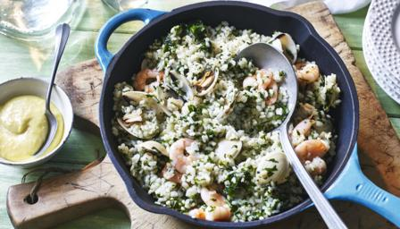 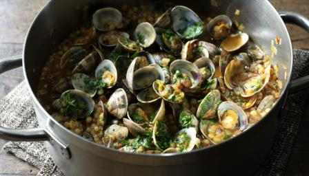 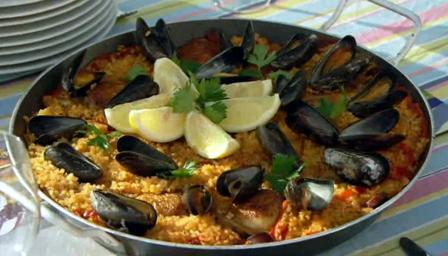
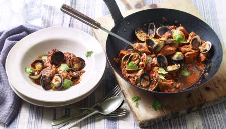
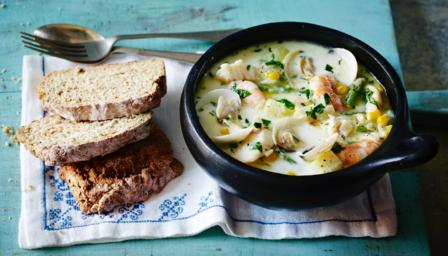
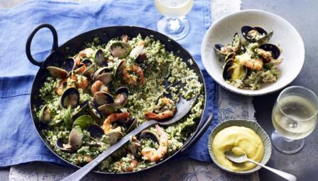
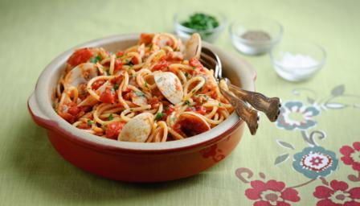
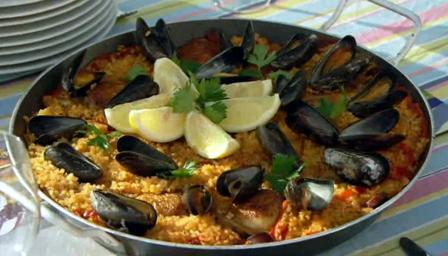
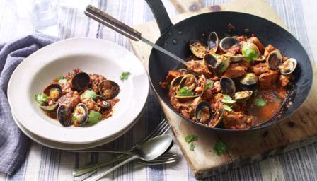
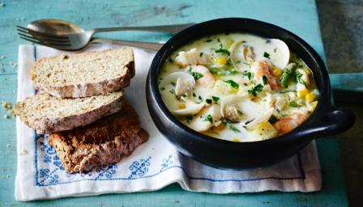
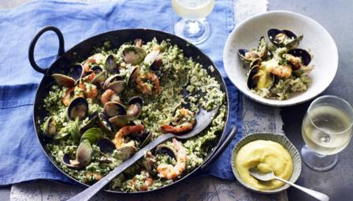
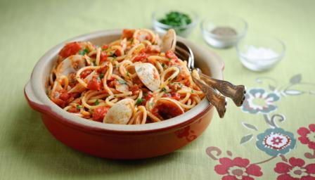